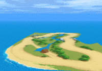
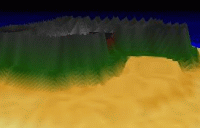

cellosoft.com
documentation: index - introduction
cellosoft.com |
|
mode 7 ex introduction First I'd just like to welcome you to mode 7 ex! This extension has been in development for several years, and is finally ready for just about any use you can think of. If you are a returning user, I hope you will find the new version of the extension extremely more powerful and easier to use. If you are itching to use the new extension, I suggest first checking out what's new in Mode 7 ex.
what is mode 7? In the simplest form, the term mode 7 refers to a graphics mode on the Super Nintendo (tm) system used to, among other things, create pseudo 3d games. F-Zero or Mario Kart are examples of several commercial Nintendo games that use mode 7. The games turned a flat 2d map into a 3d environment. The mode 7 ex extension puts this power in your hands, making it extremely easy to create maps and move around them. You can load images into mode 7 ex and take them for a spin in just minutes!
what is mode 7 ex? After the initial public beta release of the Mode 7 extension, many suggestions were brought forth, there was a definite need to continue development on the basic Mode 7 concept. Striving to go beyond the basic idea, I decided to integrate some neat concepts into mode 7 ex. Among these, support for 'voxels', allowing for truly 3-D environments, image interpolation and mip-mapping for high-quality rendering, even fog. For a full listing of the new features, check out the new features page.
|
|
mode 7 ex copyright © 2000-2002 Marcello Bastéa-Forte and Cellosoft |